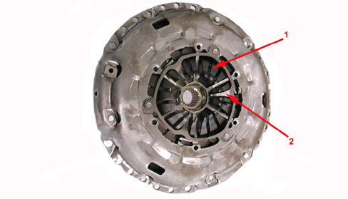
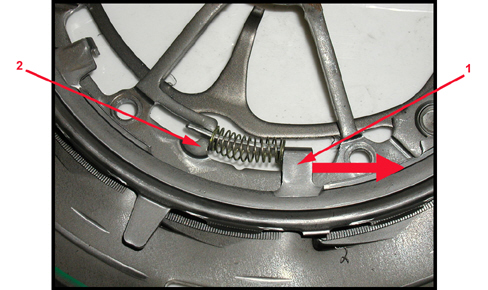
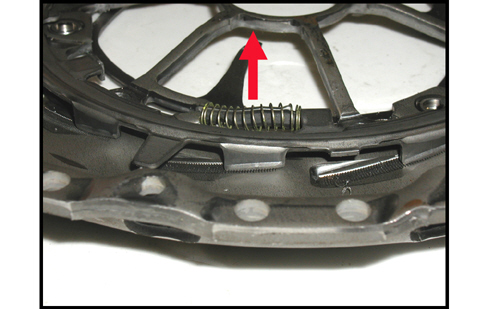

INTRODUCTION - CLUTCH
- Path
- Descriptions > 18 CLUTCH UNIT > INTRODUCTION - CLUTCH
- Kind
- system description
- Applies to
- engines: 3.2 JTS; all production periods
- Interactive page
- https://sloeber94.github.io/elrnDB-aBrrSpdr/en/#/946001210
Applies to: engines: 3.2 JTS; all production periods
The clutch is the dry single plate type supplied by Luk with a dual spring and the SAC device is fitted for recovering clutch plate wear.
In addition to the usual Belleville washer (1) there is also an auxiliary spring (2) on the clutch mechanism to make the force on the pedal linear. In effect, the auxiliary spring operates in the "non-linear" area of the Belleville washer.

1. Belleville washer
2. Auxiliary spring
The SAC device rests on the knurled inclined planes inside the clutch cover on which the wear recovery device seal moves. When wear is detected, three springs rotate the seal.

1. Seal side
2. Clutch cover side
When it rotates the seal is raised and recovers the wear of the clutch plate.

A special tool kit must be used for the servicing operations of removing-refitting the clutch mechanism that makes it possible to cancel the force from the pressure plate pre-loading and therefore less effort is required on the pedal.